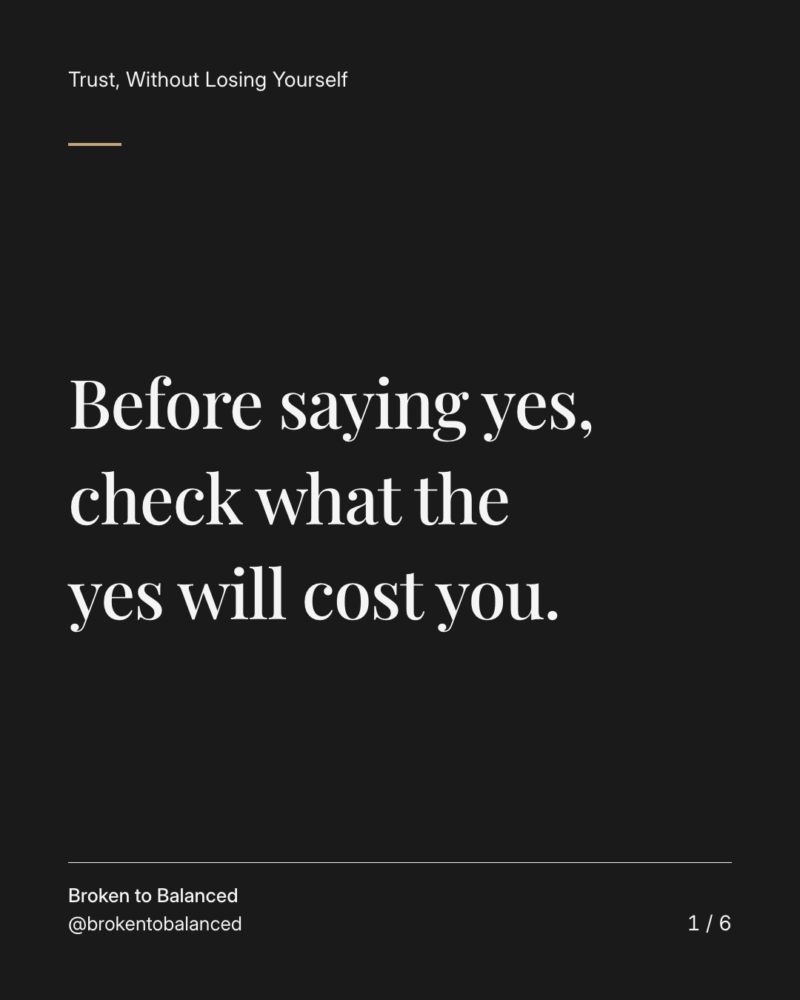
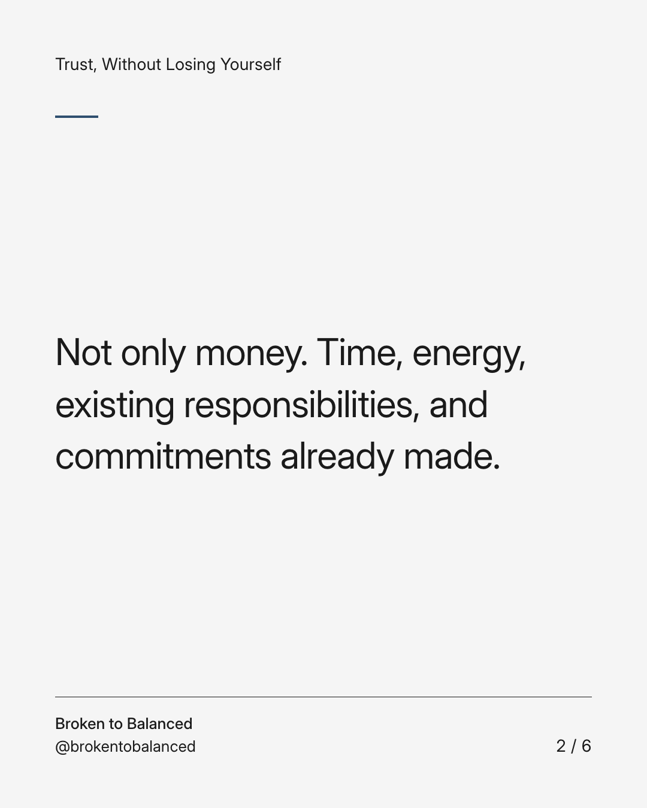
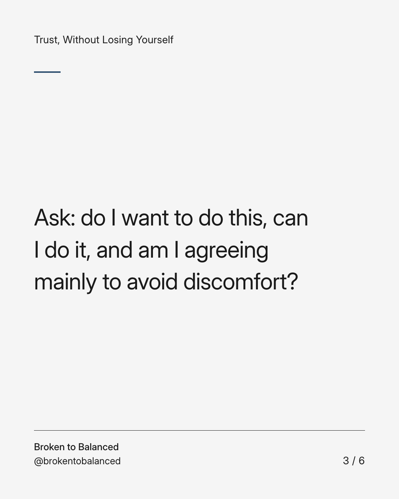
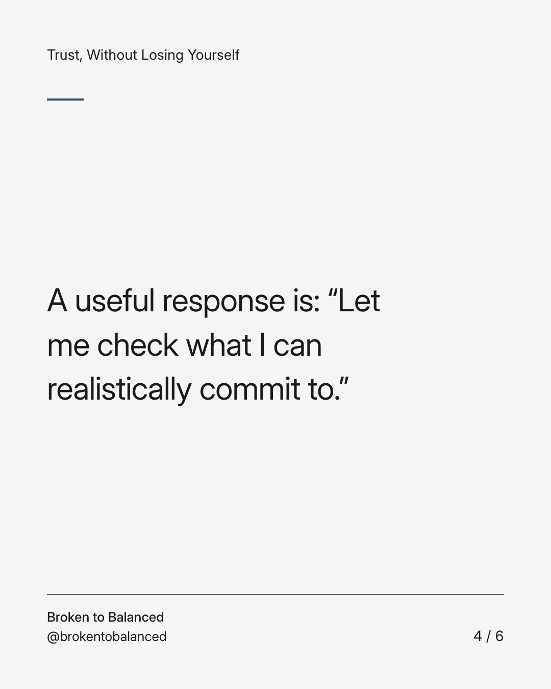
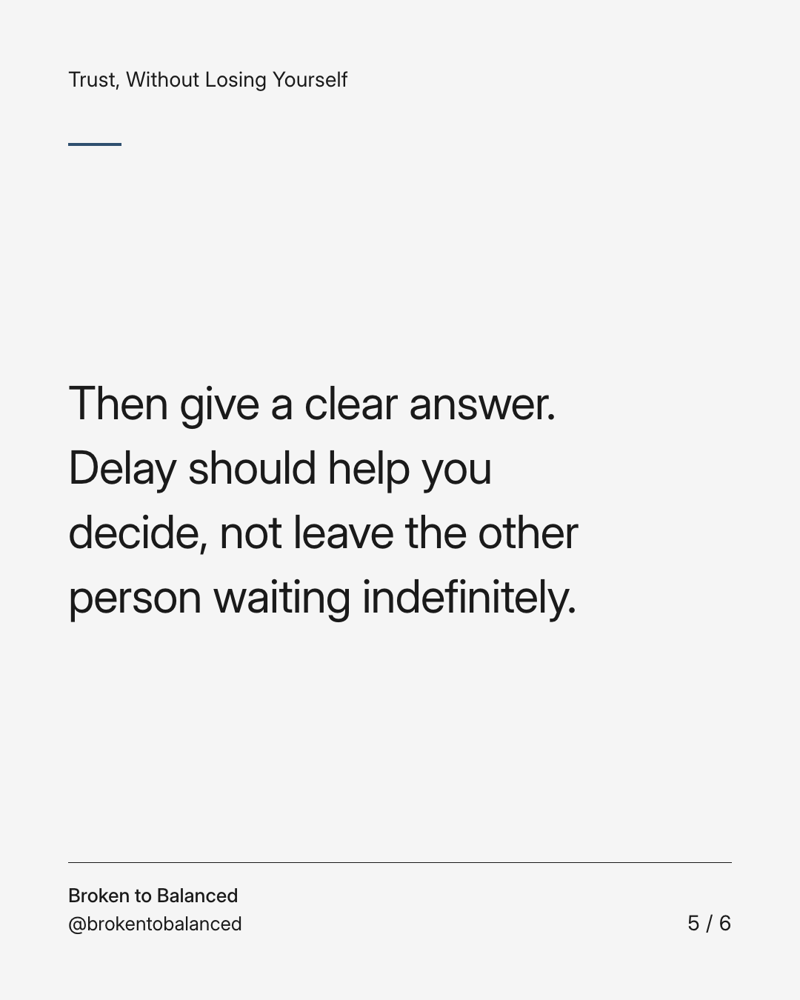
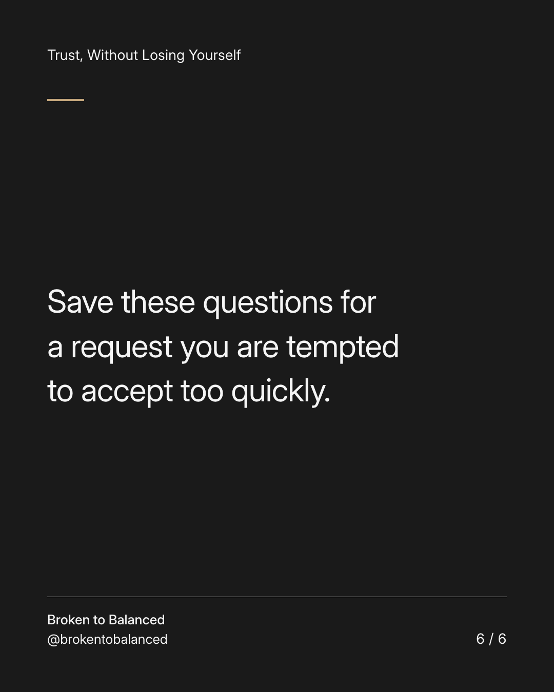

Exact text and accessibility text
Before saying yes, check what the yes will cost you.
Slide 1 of 6. Before saying yes, check what the yes will cost you.


Exact text and accessibility text
Not only money. Time, energy, existing responsibilities, and commitments already made.
Slide 2 of 6. Not only money. Time, energy, existing responsibilities, and commitments already made.


Exact text and accessibility text
Ask: do I want to do this, can I do it, and am I agreeing mainly to avoid discomfort?
Slide 3 of 6. Ask: do I want to do this, can I do it, and am I agreeing mainly to avoid discomfort?


Exact text and accessibility text
A useful response is: “Let me check what I can realistically commit to.”
Slide 4 of 6. A useful response is: “Let me check what I can realistically commit to.”


Exact text and accessibility text
Then give a clear answer. Delay should help you decide, not leave the other person waiting indefinitely.
Slide 5 of 6. Then give a clear answer. Delay should help you decide, not leave the other person waiting indefinitely.


Exact text and accessibility text
Save these questions for a request you are tempted to accept too quickly.
Slide 6 of 6. Save these questions for a request you are tempted to accept too quickly.
Exact caption
Plain-text fallback: select and copy the caption.